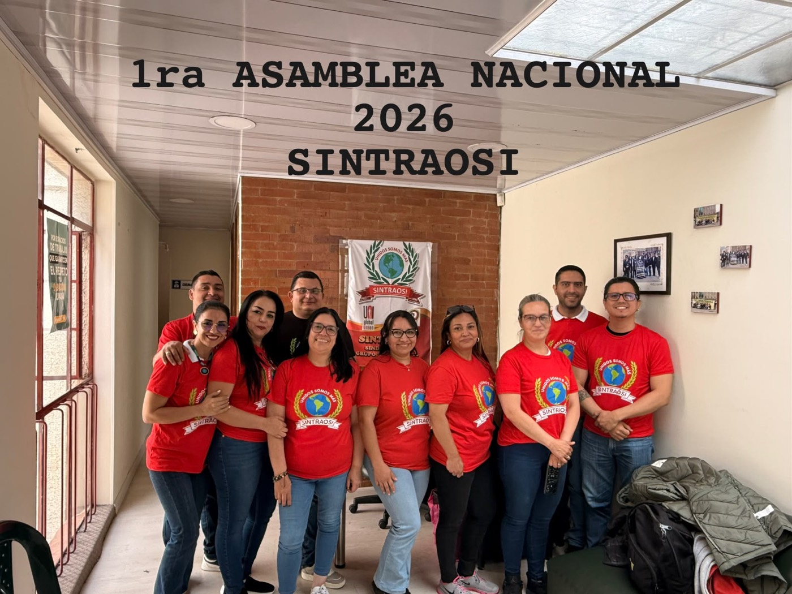

Una organización sindical independiente al servicio de los trabajadores del Grupo Empresarial Keralty / Sanitas Internacional.
Somos una Organización Sindical independiente encaminada en la búsqueda de las mejoras de las condiciones laborales y sociales de nuestros afiliados y sus familias, mediante un diálogo respetuoso y la negociación colectiva.
Contamos con un grupo de directivos comprometidos con responsabilidad social y valores que inspiren confianza entre los afiliados, encaminados a proteger y defender los derechos de los trabajadores, con vida sindical activa, respetuosos de la legalidad interna, democráticos y de consensos, participativos desde sus bases, con vocación de servicio, visión de futuro y compromiso.

Impulsamos dentro del equipo de funcionarios de Sanitas Internacional una transformación social con igualdad de género en pro de defender los derechos de todos los trabajadores, de acuerdo a lo que dispone el código sustantivo del trabajo, la Constitución Política colombiana y el reglamento interno de trabajo; contribuyendo a que el crecimiento profesional y laboral sea transparente y equitativo, evitando con ello el descenso de las condiciones laborales.
Ser reconocidos a nivel nacional e internacional como una organización moderna que transforma la cultura y la práctica sindical como una fuerza social vanguardista, encaminada a la defensa de los intereses laborales y sociales de los asociados y sus familias, mediante la protección y conservación del empleo y el acceso universal a la educación y la tecnología.
Los principios que guían cada decisión de la Organización Sindical.
Damos respuesta a los objetivos y prioridades de nuestros asociados, desarrollando su autoconfianza en el movimiento sindical nacional e internacional.
Tomamos nuestras propias decisiones, respetando las decisiones estratégicas de otras organizaciones sin injerencias políticas o personales.
Promovemos una relación de iguales, basada en el respeto, la confianza y la comprensión mutua, donde la diversidad es reconocida.
Promovemos el acceso a la información y el control interno, para que la relación entre afiliados y directivos sea transparente.
Promovemos la objetividad en la toma de decisiones, el manejo de nuestras finanzas y la operatividad de la organización.
Promovemos la igualdad en la participación de hombres y mujeres, con oportunidad de ser parte activa de la Junta Directiva.
Brindamos servicio de manera natural, amable y entusiasta a los trabajadores afiliados, sus familias y compañeros de trabajo, sin distinción alguna.
Innovación y mejora continua para cumplir los estándares establecidos y responder a las expectativas de nuestros afiliados.
Colaboramos y coordinamos acciones para resolver oportunamente las necesidades de nuestros afiliados.
Actuamos con lealtad, honestidad, veracidad e integridad, con respeto a la dignidad del ser humano.
Comprometidos con los afiliados, sus familias y la sociedad, mediante programas de cuidado social y ambiental.
De un despido injusto a una organización sindical nacional con reconocimiento legal ante los tribunales.
Leer la historia completa → LiderazgoConoce a los compañeros que representan y dirigen la Organización Sindical a nivel nacional.
Ver la junta directiva →